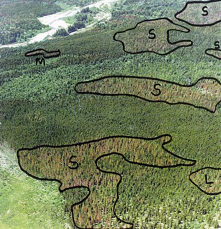

Please sent all STAMP related questions and comments to me at colinr23 AT gmail DOT com. Please try to include as much information as possible. If you would like the Visual Studio Project, let me know.
They kind of data that started me on this research! 